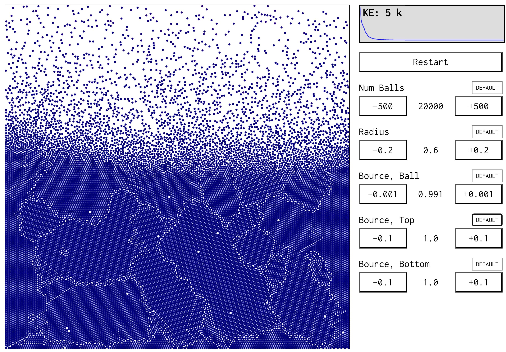

Bouncing balls, for fun
Sometimes it's fun and therapeutic simply to build, for no particular purpose except a brief distraction. On new year's day 2026 I was in need of some therapeutic fun, so, with the vague excuse of teaching (or sharing the vibes of) some Newtonian mechanics to my 4yo daughter, I built a little simulator. Here's a capture of it in action:
Eschewing the usual rules of blogging, I have no idea why a reader would be interested in this stuff, but here are some titbits (if you happen to be interested in something, jump to it):
- Collision handling "overlapping & approaching"
- Fast collision detection "spatial hashing"
- Emergent complexity "chaos is beautiful"
- Therapeutic building "an absorbing state"
Collision handling
Overlapping & approaching
Collision detection between balls (circles) is straight-forward. Calculate the straight-line distance between the two balls, and if it's less than the sum of radii, they overlap & have collided. But how to handle the collision?
The first thing we should do is to update the velocity of the two colliding balls. From one ball's perspective, look at the approach velocity of the other ball, then add this approach velocity to ours. Since both balls do the same (implicitly in the opposite direction), momentum is conserved. Note that this assumes they have the same mass.
Conserving energy
This rule also conserves energy. It wasn't immediately obvious to me why this is. Kinetic energy is proportional to the speed squared. Now think of the velocity of balls 1 and 2 in two components: $a_1$ and $a_2$ in the approach direction of the other ball and $p_1$ and $p_2$ perpendicular to that. The "add the approach velocity" rule means the new velocity of ball 1 is $a_1 + (a_2 - a_1) = a_2$, and vice versa for ball 2. So, the balls swap their velocity components in the approach direction.
The sum of their speeds squared is equal to $a_1^2 + p_1^2 + a_2^2 + p_2^2$ by Pythagoras, so it doesn't matter if they swap $a$-components, the kinetic energy is preserved.
If we leave it at this, we hit an issue: the balls stick together when they collide (see below, left). The problem is that we haven't detected the collision early enough --- the balls already overlap, and updating the velocity might not be enough to fix it before the next frame, which will make the collision logic fire again, cancelling itself out!
One solution is to immediately move the colliding balls so they don't overlap any more. On the next frame, since they're now moving away from each other, they won't get stuck. This works OK, if a bit "jumpy", and if you overcrowd the balls so there isn't enough space, it (understandably) goes a bit crazy. I also don't like the fact that this might move the ball to make it overlap with another one that you've already have tested for collisions with on this frame.
A more elegant solution is to leave the balls overlapping, and update the condition for collision: you are only colliding if you overlap AND you're moving towards each other. This rule isn't perfect, but seems to do a reasonable job in practice.
Left: no collision fixes, missing/sticky collisions. Right: only collide when moving towards the other.
Fast collision detection
Spatial hashing
My initial implementation started was getting pretty slow with around 2000 balls, updating at 200 physics ticks per second. My browser dev tools illustrated the limiting factor: exhaustive checking for collisions on every frame. The collision checking implementation looked like this:
this.foreach((i) => {
this.foreach((j) => {
if (i >= j) return;
const dx = this.px[j] - this.px[i];
const dy = this.py[j] - this.py[i];
const rsum = this.r[i] + this.r[j];
const distSq = dx * dx + dy * dy;
if (distSq < rsum * rsum) { // if overlapping
... // handle collisionThis code exhaustively checks all pairs of balls, so for 2000 balls at 200 ticks/s, it's gunning for (1/2) $\times$ 2000 $\times$ 2000 $\times$ 200 = 400 million collision tests per second. Too many.
The fix I went with is spatial hashing. The idea is still to test one-by-one, but to quickly rule out most of the balls that are nowhere near the one being tested. So we divide the screen up into buckets (I went with 50 x 50 = 2500 total), and put balls into any buckets that their bounding box overlaps. Now we can quickly find all balls that might collide in a given portion of the screen.
Once we have this, go through each bucket and run the same exhaustive algorithm above within the bucket. There will be far fewer balls to compare, so this stage will run much faster. With this, I could simulate 10$\times$ as many balls on my laptop, about 20,000. (I presume you could apply this recursively to go further --- I guess that's the BSP/quadtree idea.)
Emergent complexity
Chaos is beautiful
We have a very simple set of rules. (The only important one that I didn't explain already is the "bounce factor", or coefficient of restitution, which absorbs or adds energy when balls hit each other, or the walls.) Even with such a simple simulation, we can get some interesting and beautiful emergent behaviour.
My favourite is to shrink the size of the balls, reduce the bounce on collision so that balls lose energy when they collide with each other, and increase the bounce on the top and/or bottom walls to add energy to compensate. You get a sort of "cooling" crystal structure of balls away from the walls, but the balls near the walls have more energy and help to jiggle the system into more stable shapes.
Here's an example:

I'm quite a fan of thinking of problems as searches, and so the way this system "searches" for a dense packing of balls through annealing is quite cool.
It also helps illustrate the smooth boundary between mechanics and thermodynamics (via statistical mechanics). I'm hoping that playing with simulations like this will help build a depth of understanding behind my 4yo's memorised fact that "cosy things go jiggle".
Therapeutic building
An absorbing state
I, like many, find some days tough. New year's day was one of these. It may sound contrived, but building this thing genuinely helped me on that day. Sometimes what my brain needs is a proper distraction, a way to focus on an achievable goal and tune out the rest. This mini-project provided that.
I'm not sure what the takeaway is. First, please don't hear me as saying that this is a replacement for other therapies, or to suggest that escapism is a long-term healthy coping strategy. For me, I hope to use this as a reminder that I really do enjoy building things, that it's fine to build even dumb/simple/worse-than-many-alternatives things, and that I can use this as a tool to distract myself, when distraction is what I need.
Wrapping up
You can see this thing from multiple perspectives:
- A simulation of Newtonian mechanics - balls bouncing in a box
- A thermodynamical system, with temperature responding to heat inputs
- A search for stable (or dynamically stable) configurations
- A teaching tool for curious kids
- A helpful distraction and coping mechanism
I think they're all valid.
